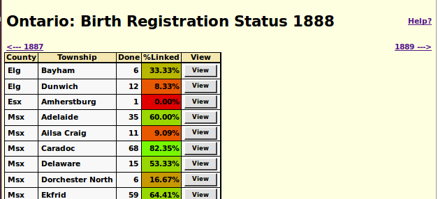

Birth Registration Status by Year: Help
The associated panel displays an overview of the progress
of the transcription effort for Ontario birth registrations
for a particular year.

For convenience there are arrow links for proceding directly to
the status summary for the preceding and following years.
For each registration city, town, or township,
this page displays:
- An abbreviation for the county name.
- The name of the city, town, or township.
- the number of birth
registrations that have been transcribed. To be considered as
transcribed at least the name of the child has
been transcribed.
- The percentage of those transcriptions that have been
linked to corresponding records in the family tree. These
cells are color-coded to visually indicate the degree of
completeness, from dark red for townships where there are no
links to the database through bright green for townships where
all of the births have been linked.
- Clicking on the View button
displays a
summary of the transcriptions for that
particular place of registration.